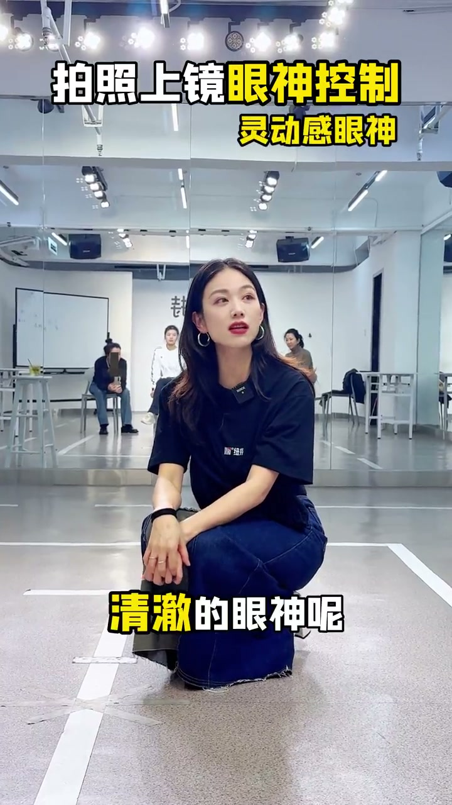
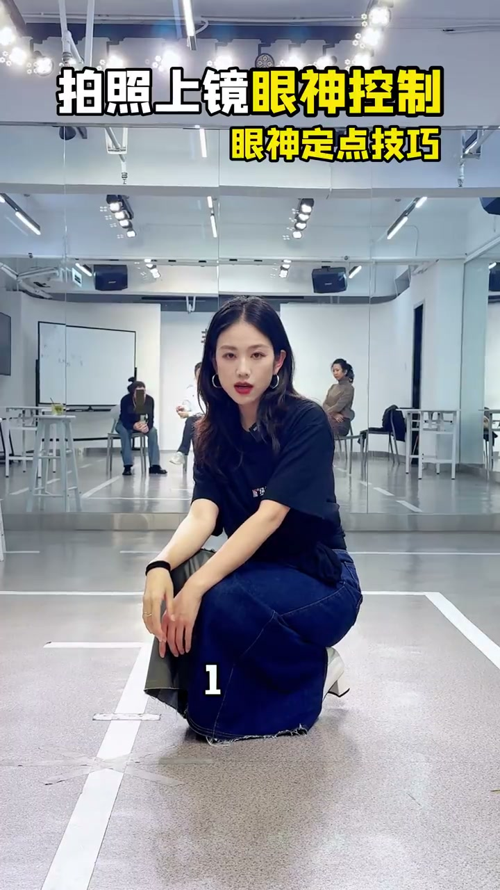

眼睛不乱动，只练一种状态
00:00眼睛不要过来过去——上镜最忌讳眼神乱飘，只有一种状态。
00:02这个状态可以闭、可以睁、可以迷离——先把这三种眼神练熟。

下巴是眼神开关
00:08收下巴它就发力了——想拍凌厉、有力量的风格，收下巴。
00:12微抬下巴它就迷离了——松弛下来，有气力感、慵懒感。


不同场景的眼神切换
00:15正常展示的时候，就是放松很自然的眼神，有气力感但不用力。
00:20柔和、温柔的眼神呢，要带点笑——笑容让眼神跟着温柔。
00:26清澈、明亮的眼神呢，要有灵感——眼神聚焦，仿佛看到发光的瞬间。


关键：学会定住
00:33把这几种眼神学会了，学会定住——在每一个点位给我定上：一、二、三，换下一个点位再一、二、三。
00:44每一个点位定下来，你拍到什么风格就能驾驭什么风格——眼神定得住，风格就驾驭得了，不需要太多花哨技巧。

上镜眼神的核心不是会多少种眼神，而是定得住——每个点位一二三定住，什么风格都能驾驭。